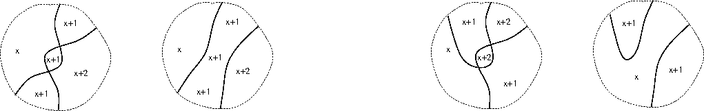

grad school home
up
| Introductory notes on partition categories
| WORK IN PROGRESS!!!
Jump (Click me)
\section{Introductory notes on partition categories}
\section{Representation theory}
Further exercises
\section{Related categories}
\subsection{On graded categories}
A point is left-exposed if it lies in the closure of the leftmost
alcove.
A partition in $\EE(n,m)$ is 1-plane if it
can be drawn in the frame drawing convention with only left-exposed crossing lines (i.e. left-exposed crossing points).
Note that fixing a partition does not in general dictate whether there is a line between
two vertices in a picture representing it (if they are in the same part
they may be connected by an indirect path in the representing graph).
Therefore
there is generally a lot of freedom in the number and position of line
crossings in the pictures of a partition.
The situation is clearer for pair-partitions, so we proceed with
this case next.
\begin{proposition}
The restriction of $\caP^1$ to (dilute) plane pair partitions defines a subcategory.
\end{proposition}
Proof: exercise.
\subsection{On pictures of pair partitions in $\JJ(n,m)$}
Of course crossings of lines cannot be avoided in general in our frame
drawn pictures of
graphs, and in particular of pair partitions in $\JJ(n,m)$.
Indeed, given the frame drawn picture conventions, the property that
the two lines associated to two pair-parts necessarily cross in any
picture is intrinsic to the underlying partition. However
the order of crossings
(i.e. the order in which the line associated to one pair meets
the lines associated to other pairs)
is not fixed.
We are interested here in other `crossing properties' that are
intrinsic to the underlying partition.
Recall that a graph `picture' on an interval $R$ has the property that no
interior point of $R$ is common to three lines.
\begin{proposition}
Among pictures of pair partitions $p \in \JJ(n,m)$ are `efficient' ones
in which (Ia) no line self-intersects;
and (Ib) no two lines cross more than once;
and (II) there are no interior vertices.
\end{proposition}
Proof: exercise.
Roughly speaking, one can think of drawing each line as straight as possible.
Straight lines between vertices on the same edge of a rectangular frame are not
generic, but this can be fixed by `infinitessimal' deformation of the paths;
or by working on a marked disk,
possibly with infinitessimal deformations of the vertex
positions.
(See Figures (i),(ii) below.)
Specifically, note that straight lines on the marked disk automatically
satisfy (I,II), so the only issue is
if such a construction gives a
picture, i.e. the issue is of
generic-ness in the sense of triple points.
But by (Ib) there are finitely many crossings,
so every crossing point has a neighbourhood containing no other
crossing points;
so for every crossing
one can move one of the four vertices involved by a small amount
(hence moving the crossing) without moving the crossing point
onto another crossing point. Thus if there is a triple crossing this
can be resolved into three crossings, without introducing any other
triple crossings, by a small move of a single vertex.
Exercise: What happens to efficient pictures under composition?
The concatenation of pictures is a picture for the composite
partition, but not efficient in general.
For example there are interior vertices.
One can easily replace a chain of lines with interior vertices by
a single line with these lines as segments and no interior vertices.
But what else goes wrong?
The next few figures show some efficient
pictures of pair partitions.
The height (or left-height) of an
alcove
in such a picture is % and associate numbers to their alcoves
the minimum number of lines one has to cross to get from the alcove
to the left edge of the frame
(cf. [MGP,MM]).
Note that if a line from exterior vertex to exterior vertex
in a frame drawn picture
is non-self-crossing then it separates the framed region into three components
(two open regions and the line itself). One component contains the
left-hand edge. Thus each such line contributes to the height
at an alcove point (+0 if on the same side; +1 otherwise).
If there are no double-crossings then (CLAIM) these
individual contributions together give the height.
If there are double crossings then there may be points on the 0-side
of both of two lines, for which there is nonetheless no path
to the left, because the lines overlap.
In this case the height is greater than the sum of contributions from
individual lines.
We show these height numbers in the figures.
The first two figures are pictures of the same pair partition.
\begin{figure}
\caption{Plane drawn pictures of pair partitions with alcove heights}
\includegraphics{xfig/grap010xb1.gif}
\end{figure}
 Note that none of the pictures so far are
pictures of 1-plane partitions.
Note that a crossing
is left-exposed if it meets a 0-alcove.
(Such a crossing also meets two 1-alcoves and a 2-alcove.)
We say that a crossing in a picture is $m$-left-exposed
(or height $m$)
if it meets an $m$-alcove
and no lower (cf. [GMP]) (i.e. it meets two $m+1$-alcoves).
We write $\JJ_l(m,n)$ for the subset of $\JJ(m,n)$ of elements
having a picture in which no crossing is higher than $l$-left-exposed.
We take $\JJ_{-1}(m,n)$ to be the subset of elements (having a picture)
with no crossings. Then
$\JJ_{-1}(m,n) \subseteq
\JJ_{ 0}(m,n) \subseteq
\JJ_{ 1}(m,n) \subseteq ... \subseteq \JJ(m,n)$.
Note that none of the pictures so far are
pictures of 1-plane partitions.
Note that a crossing
is left-exposed if it meets a 0-alcove.
(Such a crossing also meets two 1-alcoves and a 2-alcove.)
We say that a crossing in a picture is $m$-left-exposed
(or height $m$)
if it meets an $m$-alcove
and no lower (cf. [GMP]) (i.e. it meets two $m+1$-alcoves).
We write $\JJ_l(m,n)$ for the subset of $\JJ(m,n)$ of elements
having a picture in which no crossing is higher than $l$-left-exposed.
We take $\JJ_{-1}(m,n)$ to be the subset of elements (having a picture)
with no crossings. Then
$\JJ_{-1}(m,n) \subseteq
\JJ_{ 0}(m,n) \subseteq
\JJ_{ 1}(m,n) \subseteq ... \subseteq \JJ(m,n)$.
Exercise: How can we determine which $\JJ_l(m,n)$ a partition
$p \in \JJ(n,m)$ is in?
How can we draw a picture of
$p$ which realises this lowest height?
\subsubsection{Concatenation of pictures}
\begin{figure}
\caption{Concatenation and straightening of pictures with marked alcove
heights}
\includegraphics{xfig/grap010c1.gif}
\end{figure}
As noted, the concatenation of two efficient pictures of pair partitions
gives a picture of the composition pair partition,
but is not efficient in general. It may have loops
of internal vertices for example.
Exercise: What can be said about alcoves under concatenation?
For example, can concatenation produce a higher alcove than in either
source picture?
Let $A,B$ be compatible pictures and $A|B$ be the concatenation.
Note that an alcove of $A|B$ is either an alcove of $A$ or $B$ or a
union of alcoves from each. The height of this alcove cannot exceed
the height of the lowest contributing alcove (since a route to the left
giving this number in $A$ or $B$ is still a route to the left in
$A|B$).
Thus concatenation cannot produce a higher height in $A|B$ than in
$A$ and $B$ together.
So the question is if straightening a picture can produce higher alcoves.
Apart from isotopies (which do not change the alcove heights),
straightening consists of (i) loop removal;
(ii) twist (self-crossing) removal;
(iii) double-crossing removal;
(iv) braid moves.
It will be evident that (i) removes a line, and hence cannot increase
a alcove height at any point. Essentially the same is true for (ii).
One can show that the the set of heights appearing after a double-crossing removal are a subset
of those before.
In the relevant neighbourhood of a picture this looks like one of the
following:

And one can show that the set of heights
after a braid move are the same as before,
as in the neighbourhood here:
(In both cases the specific alcoves in the picture change, of course.)
Here is a picture of a pair partition (in $\EE(7,7)$) drawn on a disk,
using only straight lines;
and a concatenation of such pictures:
\subsubsection{Near planarity - the Bob cat}
The categories $\caT^1$ and $\caB^1$ both have very rich
representation theory (and also many applications).
It is therefore interesting to investigate a series of
categories that interpolate between them.
Perhaps the simplest of these is constructed next (we call it the
Bob category for now - for reasons to be explained later).
Suppose we have a plane pair partition $p \in \JJ(n,m)$
represented by a non-crossing
picture. This has a set of left-exposed pairs (and this set is independent
of the picture).
We may construct a new pair partition $p'$ in $\JJ(n+1,m+1)$
from $p$ as follows.
First add new vertices top and bottom left, and connect these (obviously
this can be done without introducing crossings to the picture).
\begin{figure}
\caption{(i) Plane partition with new pair (in red). (ii) Deformation close to
chosen two (out of three) left-exposed lines. (iii) Replacement of first pair with a crossing. (iv) Overall resultant non-plane partition.}
\includegraphics{xfig/grasp1p2.gif}
\end{figure}
Note that the new line can be deformed to have a point arbitrarily close
to any (or all) of the set of lines corresponding to the
`left-exposed pairs' from $p$.
(Of course these are no longer left-exposed in $p'$.)
Now choose a subset $s$ of the set of originally left-exposed pairs.
For each chosen line in the picture - which has the new line approaching close
to it at a point by construction - replace the two line segments in
a neighbourhood of this point by two crossing line segments.
This gives us a (picture of a) non-plane element $p_s$ of $\JJ(n+1,m+1)$.
It will be clear that this construction for $p_s$ is well-defined -
i.e. not dependent on the pictures used.
Note that this construction gives us a subset
of $\JJ(n+1,m+1)$.
The subset
consists of partitions with the property that
(i) they can be drawn with only left-exposed crossings;
(ii) in any drawing the intersection of the leftmost alcove with the frame is a
connected interval of the frame (i.e. there are a sequence of
touching segments of lines running from top-left to bottom-left vertex).
Let us write
$\JJ^1(n+1,m+1)$
for the set of all such partitions.
The set $B(n,m)$
of pairs consisting of a plane pair partition $p$ in $\JJ(n,m)$
and a subset $s$ of the set of left-exposed pairs in $p$
is called the set of blob partitions .
(Because they can be depicted by a picture of $p$ together with
a `blob' or dot marked on each element of $s$.)
Exercise: Investigate the following.
We claim that the map $\psi: B(n,m) \rightarrow \JJ^1(n+1,m+1)$
constructed above is a bijection.
\subsubsection{Beyond the Bobcat}
The following figure effectively determines the combinatorics of $\JJ_1(n,m)$
(cf. [MM1]).
The figure starts as a version of the
augmented Bratteli diagram for the Brauer algebra
but, roughly speaking, one must avoid pictures violating the height
`ceiling' rule.
This first manifests itself in that the 4th string in the 4-propagating lines
part at $n=4$ cannot cross another line.
Note that the picture is not yet finished!
figs
\subsubsection{Bilateral grading}
This is what it sounds like (or else see latex notes!). Many of the
subcategory defining constraints, such as this one, commute. So we
get more subcategories. For example
(fig taken from latex notes):
Some of these combinations may be more intrinsically interesting than
others (that is another story). Some are interesting mainly because
their representation theory presents an interesting challenge...
OLD Notes on relative graphs (Click Me)
Note that any non-trivial graph can be made into an $S$-graph
(for example by mapping all of $S$ to one vertex).